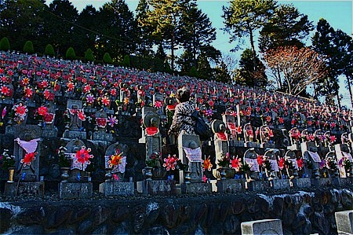

埼玉県の小鹿野町にある
地蔵寺は秩父霊場の観音院の手前にある。
昭和46年に開かれた新しい寺だ。
以前、
秩父霊場レポートの際にチョットだけ触れたが、あまりに凄いので改めて紹介させていただく次第である。
この寺は
水子供養の寺として一部の間では有名な寺である。
この寺を開いた初代住職は政治評論家として戦時中から活動していた人物であったという。
その中で水子供養という新しい概念を確立し、この寺を開いたのである。
いわば
水子供養発祥の地なのだ。
従来の伝統的な信仰においても死産した嬰児を通常の死者とは区別して供養する、という考え方はあったが、水子供養は人工中絶による嬰児の供養を主体としたところにその特徴があるといえよう。
今では伝統的な習俗と思われる若者も多いかもしれないが、ドリフがブラウン管の中を走り回り、大阪万博が開催され、三島由紀夫が腹を切った、そんな時代に誕生した新しい信仰なのだ。
山間の境内には数え切れないほどの地蔵がひしめきあっている。
初めてこの寺を見たときは赤い花の咲く花畑かと思った。
無論その正体は尋常ならざる数のお地蔵さんであり、派手な果実に見えたのはお地蔵さんに供えられた赤い前掛けと風車だったのだ。
1万数千体はあるというそのお地蔵さんの大海に身を投じてみる。
行けども行けども行けども行けども水子地蔵の行列が尽きることはない。
全部回るのはチョット無理っぽいな…。
お地蔵さんの大群は幾つかのエリアに分かれており、段々畑よろしく山の斜面に設置されている。
道路を挟んだ向こうの山の斜面にも段々畑状態のお地蔵さん軍団がひしめいている。
水子供養の草分けとはいえ、秩父地方の山奥にこれだけ大量のお地蔵さんがある事が不思議でならない。
実際に目で見ても信じられないほど現実離れした光景だ。
…などと言っていると、さぞかし寂しげなところなんだろうなあ、などと想像しがちだがさにあらず。
山間の谷に響き渡る音量で説法が鳴り響いている。
しかも谷間に反響しまくってジャマイカ人も顔負けの
ダブサウンド状態。
新しいぞ、ダブ説法。
埼玉の山奥なのに目を閉じれば浮かんでくるのはキングストンの荒くれサウンドシステム…いや、どっちかというと
タイの片田舎でよく出くわす大音量の説法だな…。
で、本堂。お地蔵さんの規模の割にはこじんまりとしている。
中は本堂というよりも相談所のようなところで、水子に悩む人たちが真剣にお寺の人に相談していた。
あまりにも深刻な様子だったので、ほぼ100パー物見遊山で来ている私としてはいたたまれずに早々に退散して山の向かい側のお地蔵さんゾーンに歩を進めることにする。
私自身水子供養に関しては特に思い入れはないのだが、どうも「水子の祟り」とか聞くとUFOとか超能力とか心霊現象とか、そういうオカルト的なジャンルに思えてしまうのだ。
これはつまり私の精神的な成長が子供のころ見た
ビックリッ子大集合あたりで完全に止まっちゃっている、ということですね…。
とはいえこれだけ大量のお地蔵さんが並んでいる、ということはそれだけ水子の祟りを恐れ、苦しんでいる人がこの寺に救いを求めている、という事実が厳然としてあるのだ。
逆サイドの地蔵ゾーンにも大量のお地蔵さんが並んでいる。
大量のお地蔵さんを背後から見下ろすと色は失われ、それはそれでえもいえぬ迫力がある。
雛壇状に設置された大量のお地蔵さん。台座には奉納者の県名が刻まれている。
場所柄、埼玉県が多いが、かなり遠方の県名もちらほら。
この寺（というより水子供養の信仰）の信仰圏が全国に広がっていることを如実に物語っている。
それは
マスコミを経由して全国に広がった新しい形態の信仰である、ともいえよう。
まるでスタジアムの観客席のような眺め。
それぞれのお地蔵さんには番号が割り振られている。何せ1万体以上、ですから。
奉納したお地蔵さんに参詣に来ている人がいた。

傍から見れば大量のお地蔵さんの群れだが、その一体一体は奉納した人にとっては苦しみや悲しみがこめられた特別な石仏なのだ、そのことを肝に銘じなければなるまい。
とはいうものの無数のお地蔵さんに埋まってしまいそうだ。
よく自分の奉納したお地蔵さんに辿り着けるなあ。
あまりにも規模が大きすぎて一番奥まで行けませんでした…。
聞けばお盆には
このお地蔵さん全てに火が灯されるのだという。
きっと夜空をも焼き尽くすかのごとき眺めであろう。